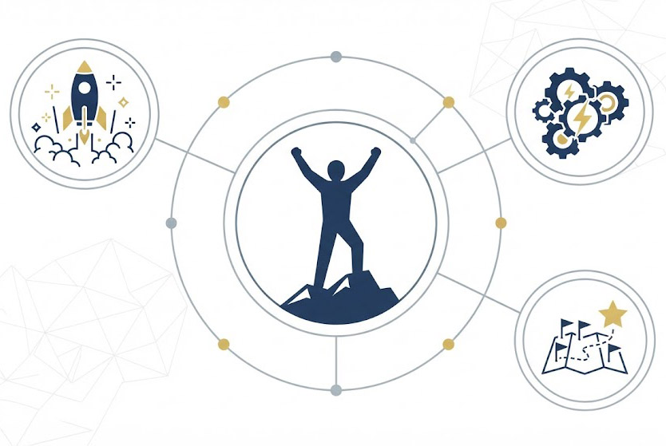

Inspirational Communication
Every leadership style produces a distinct way of communicating. Here is how the Transformational style comes across.

Add image URL to srcCommunication Style
Inspirational
It doesn't feel like business as usual. There's energy behind it, a sense that something meaningful is happening, and that everyone has a role to play in it. This style speaks to people's sense of purpose and possibility, not just their job description.
Impact on Team Collaboration
This style tends to create energy and connection, especially valuable during periods of change.
Impact on Team Collaboration: Positive
This style tends to create a sense of urgency and excitement that moves people to think and act differently. It can be especially powerful during periods of change, helping people feel connected to something bigger than their day-to-day tasks.
How to Strengthen Collaboration with This Style
Ways to turn inspiration into momentum the whole team helps carry.
Use stories, not just statements.
Stories and real examples help humanize change and make it tangible. They give people something to relate to on a personal level, not just a directive to follow.
Bring people into the process early.
Involve the team in planning and implementation, and genuinely listen to their feedback and concerns. People are far more likely to embrace change they helped shape.
Recognize the journey, not just the destination.
Celebrate progress and contributions along the way. Support and encouragement during the process help sustain the momentum this style depends on.